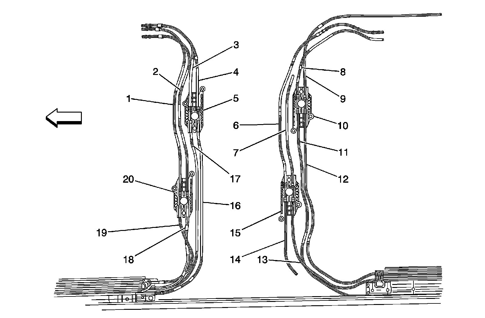

Sunroof Drive and Return Cable Identification
Sunroof Drive and Return Cable Identification
Sunroof Sunshade Cable Identification

1 - Sunshade Cable, Right Front
2 - Glass Panel Cable, Right Front
3 - Vent Glass Panel Cable, Right Rear
4 - Sunshade Cable, Right Rear
5 - Sunshade Cable, Left Rear
6 - Vent Glass Panel Cable, Left Rear
7 - Glass Panel Cable, Left Front
8 - Sunshade Cable, Left Front
Sunroof Sunshade Cables Drive and Return Tube Identification

1 - Sunshade Cable Return Tube, Right Front
2 - Sunshade Cable Drive Tube, Right Front
3 - Window Cable Return Tube, Right Front
4 - Window Cable Drive Tube, Right Front
5 - Window Motor Block, Right Front
6 - Window Vent Cable Drive Tube, Right Rear
7 - Window Vent Cable Return Tube, Right Rear
8 - Sunshade Cable Drive Tube, Right Rear
9 - Sunshade Cable Return Tube, Right Rear
10 - Sunshade Motor Block, Right Rear
11 - Sunshade Cable Return Tube, Left Rear
12 - Sunshade Cable Drive Tube, Left Rear
13 - Window Vent Cable Drive Tube, Left Rear
14 - Window Vent Cable Return Tube, Left Rear
15 - Window Vent Motor Block, Rear
16 - Window Cable Return Tube, Left Front
17 - Window Cable Drive Tube, Left Front
18 - Sunshade Cable Return Tube, Left Front
19 - Sunshade Cable Drive Tube, Left Front
20 - Sunshade Motor Block, Left Front